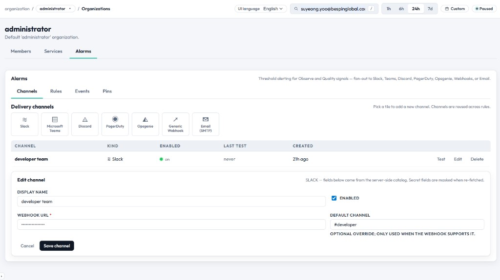

알람 — 전체 기능 매뉴얼
알람은 핵심 관측 메트릭에 대한 임계값 기반 경보를 제공합니다. 메트릭이 평가 윈도우 내에서 정의된 임계값을 넘어서면 알람은 FIRING 상태로 전환되고 대시보드에 눈에 띄게 표시됩니다.

개념
알람은 단일 메트릭을 지속적으로 모니터링하면서 임계값과 비교합니다.
IF metric_value {operator} threshold FOR {evaluation_window}
THEN alarm = FIRING
ELSE
alarm = OK알람 상태
| State | Color | 의미 |
|---|---|---|
| OK | Green | 메트릭이 허용 범위 안에 있음. |
| FIRING | Red | 메트릭이 임계값을 위반함. |
| PENDING | Yellow | 임계값은 위반했지만 평가 윈도우가 아직 경과하지 않음. |
| DISABLED | Gray | 사용자가 수동으로 비활성화한 알람. |
| NO_DATA | Gray | 평가에 필요한 데이터가 충분하지 않음 (예: 윈도우 내 트레이스 없음). |
사용 가능한 메트릭
| Metric | Unit | Aggregation | 설명 |
|---|---|---|---|
error_rate | % | Percentage | 전체 트레이스 대비 ERROR 트레이스 비율. |
p50_latency | ms | Percentile | median(50번째 백분위) 트레이스 duration. |
p95_latency | ms | Percentile | 95번째 백분위 트레이스 duration. |
p99_latency | ms | Percentile | 99번째 백분위 트레이스 duration. |
avg_latency | ms | Average | 평균 트레이스 duration. |
total_cost | USD | Sum | 평가 윈도우 내 총 LLM 비용. |
total_tokens | count | Sum | 윈도우 내 소비된 총 토큰 수. |
trace_count | count | Sum | 윈도우 내 수집된 총 트레이스 수. |
eval_pass_rate | % | Percentage | 최신 실행의 평가 pass rate. |
연산자
| Operator | Symbol | 의미 |
|---|---|---|
| Greater than | > | 메트릭이 임계값을 초과할 때 알림. |
| Greater or equal | >= | 메트릭이 임계값 이상일 때 알림. |
| Less than | < | 메트릭이 임계값 미만으로 떨어질 때 알림. |
| Less or equal | <= | 메트릭이 임계값 이하일 때 알림. |
평가 윈도우
윈도우는 얼마나 최근의 데이터를 기준으로 평가할지를 결정합니다.
| Window | Checks Every | Use Case |
|---|---|---|
| 5분 | ~1분 | 트래픽이 많은 service에 대한 빠른 탐지. |
| 15분 | ~5분 | 일반적인 모니터링. |
| 1시간 | ~10분 | 완만한 알림, 노이즈가 적음. |
| 6시간 | ~30분 | 장기 추세 탐지. |
| 24시간 | ~1시간 | 일별 예산/볼륨 임계값 모니터링. |
알람 생성
- Setup → Alarms로 이동합니다.
- "Create Alarm"을 클릭합니다.
- 다음 폼을 채웁니다.
| 필드 | 필수 여부 | 설명 |
|---|---|---|
| Name | Yes | 설명적인 이름 (예: "High Error Rate Alert"). |
| Metric | Yes | 사용 가능한 메트릭 드롭다운에서 선택. |
| Operator | Yes | 비교 연산자. |
| Threshold | Yes | 비교할 숫자 값. |
| Evaluation Window | Yes | 메트릭을 집계할 시간 범위. |
| Service Filter | No | 특정 service로 스코프 (null이면 전체). |
| Description | No | 팀을 위한 추가 컨텍스트. |
| Enabled | Yes | 알람 활성 여부. |
- Save를 클릭합니다.
- 알람이 즉시 평가를 시작합니다.
알람 예시
예시 1: 높은 에러율
Name: "Error Rate > 5%"
Metric: error_rate
Operator: >
Threshold: 5.0
Window: 15 minutes
Service: all최근 15분 트레이스 중 ERROR 상태 비율이 5%를 초과하면 발생합니다.
예시 2: 지연 시간 급증
Name: "P95 Latency > 3s"
Metric: p95_latency
Operator: >
Threshold: 3000
Window: 5 minutes
Service: "customer-support-agent"특정 service의 P95 지연 시간이 3초를 초과하면 발생합니다.
예시 3: 비용 예산
Name: "Daily cost > $50"
Metric: total_cost
Operator: >
Threshold: 50.0
Window: 24 hours
Service: all24시간 롤링 윈도우 기준 총 LLM 비용이 $50를 초과하면 발생합니다.
예시 4: 품질 저하
Name: "Pass rate below 80%"
Metric: eval_pass_rate
Operator: <
Threshold: 80.0
Window: 6 hours
Service: all평가 pass rate가 80% 아래로 떨어지면 발생합니다.
알람 표
| 컬럼 | 설명 |
|---|---|
| Status | OK / FIRING / PENDING / NO_DATA 배지. |
| Name | 알람 이름 (클릭하여 편집). |
| Metric | 모니터링 중인 메트릭. |
| Condition | 포맷된 조건 (예: "> 5.0%"). |
| Current Value | 가장 최근 계산된 메트릭 값. |
| Window | 평가 윈도우 길이. |
| Service | 스코프된 service 또는 "All". |
| Last Fired | 가장 최근 FIRING 전환 timestamp. |
| Enabled | 토글 스위치. |
대시보드 연동
- FIRING 알람은 Overview 대시보드에 빨간 카드로 고정 표시됩니다.
- 각 카드는 알람 이름, 현재 값 vs 임계값, FIRING 지속 시간을 보여줍니다.
- 알람이 OK로 복구되면 카드는 사라집니다.
- 최대 5개까지 고정되며, 더 많이 발생하면 "+N more" 링크가 나타납니다.
상태 전이
UI 관점: 알림은 명확한 시각 상태를 거치므로, 운영자가 기다릴지·조사할지·확인 처리할지 판단할 수 있습니다.
- OK → PENDING: 메트릭이 임계값을 처음 위반.
- PENDING → FIRING: 평가 윈도우가 모두 경과해도 여전히 위반 중.
- FIRING → OK: 메트릭이 임계값 안으로 복구.
- PENDING → OK: 윈도우가 끝나기 전에 회복(false alarm 방지).
편집 & 삭제
- 편집: 알람 행을 클릭 → 필드 수정 → Save.
- 비활성화: Enabled 토글을 off로 → 평가가 멈춥니다.
- 삭제: 삭제 아이콘 → 확인 → 영구 제거됩니다.
- 비활성화된 알람은 설정과 히스토리를 그대로 보존합니다.
권한
- SA / PO: 알람 생성, 편집, 삭제, 활성화/비활성화.
- DV: 알람 목록과 현재 상태를 조회 (읽기 전용).
Best Practices
- 처음에는 보수적인 임계값으로 시작한 뒤, baseline을 이해하면서 점차 좁혀 나갑니다.
- 기본 윈도우는 15분이 적절합니다. 반응성과 노이즈의 균형이 좋습니다.
- 하나의 글로벌 알람보다는 핵심 service별로 분리해 알람을 생성합니다.
- 전체 커버리지를 위해 메트릭 알람과 품질 알람을 함께 운영합니다.
- 분기마다 트래픽 패턴 변화에 맞춰 임계값을 검토·조정합니다.